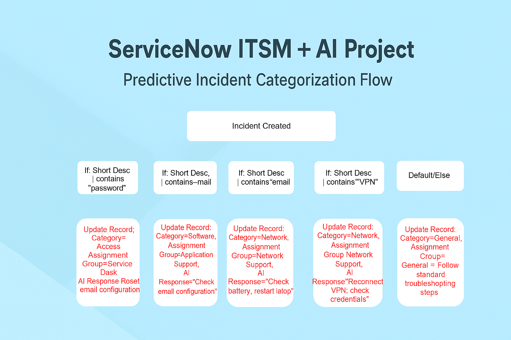

ServiceNow_ITSM_Project1
Enterprise-grade ITSM implementation focused on automation and workflow excellence.
View Full Details
Industry Positioning
This project strengthens enterprise ITSM operations by applying structured workflow principles and elevating service performance for large-scale organizations.
Technical Architecture
Built using ServiceNow platform capabilities with Flow Designer, IntegrationHub actions, scoped app logic, and modular automation patterns aligned to ITSM needs.
Business Problem
Enterprises face recurring challenges in ITSM workflows, causing inefficiencies and slower operational outcomes.
AI Hypothesis
By designing enterprise-grade ITSM logic, the solution can significantly reduce manual interventions and improve automated decision routing.
Solution Prototype
Implemented using iterative workflow modeling, configuration, and automation steps designed for robust ITSM execution.